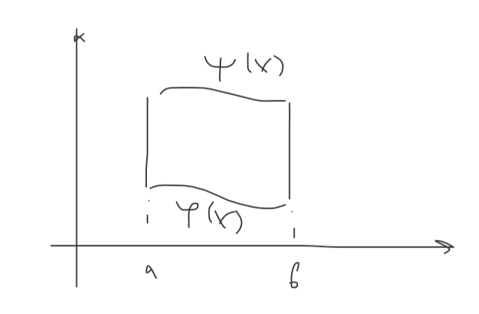

Замечание: \(\displaystyle\oint\limits_{\gamma} f_1dx_1 + \ldots + f_ndx_n\) (устаревающее обозначение)
Теорема: (формула Грина) Пусть \(G \subset \mathbf{R}^n\) ограниченная, выпуклая и замкнутая область с кусочно-гладкой границей.
Пусть \(P(x, y), \,\,\,\, Q(x, y) \in C^1(G)\).
Тогда \(\displaystyle\oint\limits_{\partial G} Pdx + Qdy = \displaystyle{\int\int}\limits_G \left(\frac{\partial Q}{\partial x} - \frac{\partial P}{\partial y}\right)dx dy\)
Доказательство:
Пусть \(Q\equiv 0\) (потом просуммируем).

Параметризация \(\psi(x) \,\,\,\, \begin{cases} x = x\\ y = \psi(x)\\ \end{cases}\)
Параметризация \(\varphi(x) \,\,\,\, \begin{cases} x = x\\ y = \varphi(x)\\ \end{cases}\)
Но важен порядок обхода, поэтому в интеграле поменяем знак.
\[\displaystyle\oint\limits_{\partial G} Pdx = \displaystyle\int\limits_a^b P(x, \varphi(x))dx + 0 - \displaystyle\int\limits_a^b P(x, \psi(x))dx + 0=\] \[= -\displaystyle\int\limits_a^b \left(\displaystyle\int\limits_{\varphi(x)}^{\psi(x)} \frac{\partial P}{\partial y}(x, y)dy\right)dx = - \displaystyle{\int\int}\limits_G\frac{\partial P}{\partial y}dx dy \,\,\,\,\blacksquare\]
Следствие: Если \(G = \bigcup_{i}^{n}G_i, \,\,\,\, G_i \cap G_j \subset (\partial G_i)\cap (\partial G_j)\) и \(\forall i \,\,\,\, G_i\) выпукла, то формула Грина верна для \(G\).
Доказательство: \(\,\,\,\,\blacksquare\)
Следствие: Если \(G_1\) и \(G_2\) выпуклы, \(G_2 \subset G_1\), то на \(G_1\setminus G_2\) верна формула Грина.
Доказательство: